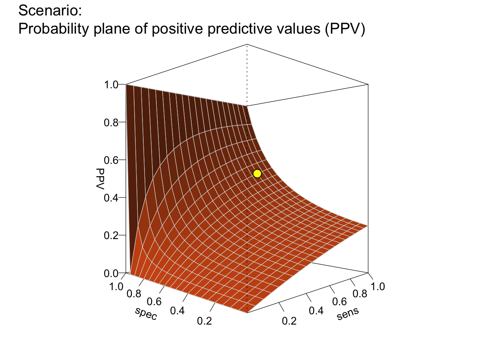
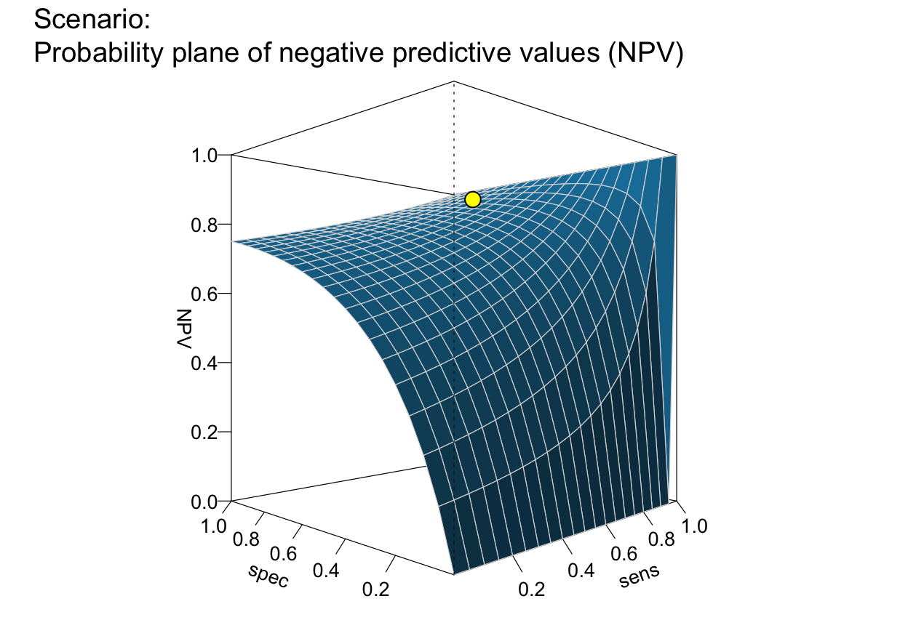
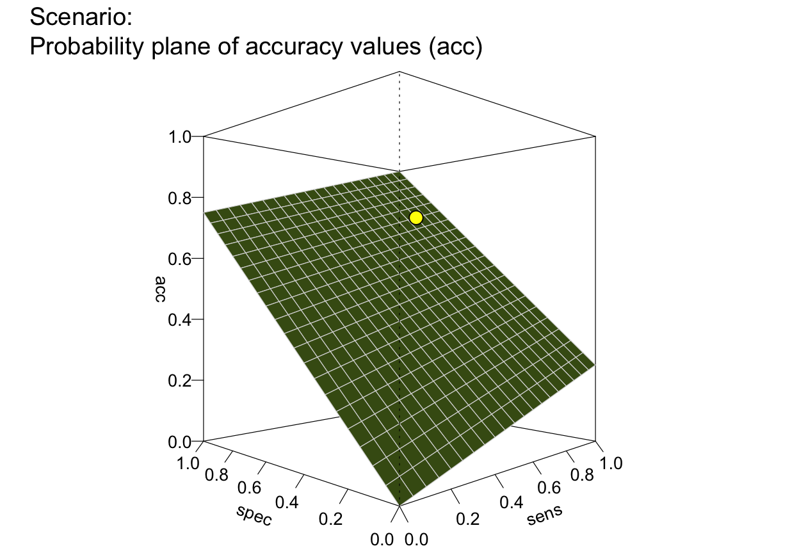
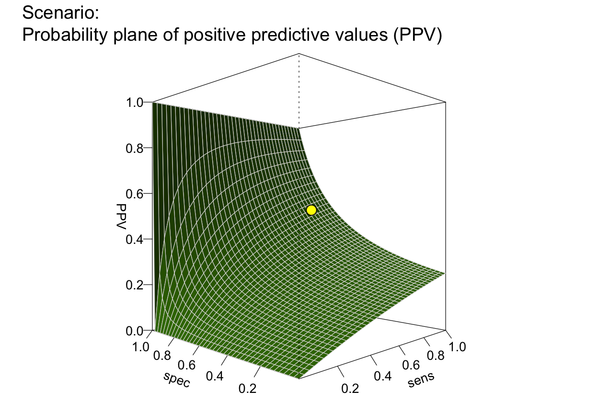

Plot a plane of selected values (e.g., PPV or NPV) as a function of sensitivity and specificity.
Source:R/plot_plane.R
plot_plane.Rdplot_plane draws a 3D-plane of selected values
(e.g., predictive values PPV
or NPV) as a function of
a decision's sensitivity sens and
specificity value spec
for a given prevalence (prev).
plot_plane(prev = num$prev, sens = num$sens, mirt = NA, spec = num$spec, fart = NA, what = "PPV", what_col = pal, line_col = "grey85", sens_range = c(0, 1), spec_range = c(0, 1), step_size = 0.05, show_points = TRUE, point_col = "yellow", theta = -45, phi = 0, lbl_txt = txt, title_lbl = NA, p_lbl = "def", cex_lbl = 0.85, col_pal = pal, mar_notes = TRUE, ...)
Arguments
| prev | The condition's prevalence |
|---|---|
| sens | The decision's sensitivity |
| mirt | The decision's miss rate |
| spec | The decision's specificity value |
| fart | The decision's false alarm rate |
| what | A character code that specifies one metric
to be plotted as a plane. Currently available
options are |
| what_col | Color for surface facets corresponding to the metric
specified in |
| line_col | Color for lines between surface facets.
Default: |
| sens_range | Range (minimum and maximum) of |
| spec_range | Range (minimum and maximum) of |
| step_size | Sets the granularity of the
|
| show_points | Boolean option for showing the current value
of the selected metric for the current conditions
( |
| point_col | Fill color for showing current value on plane.
Default: |
| theta | Horizontal rotation angle (used by |
| phi | Vertical rotation angle (used by |
| lbl_txt | Labels and text elements.
Default: |
| title_lbl | Main plot title.
Default: |
| p_lbl | Type of label for shown probability values, with the following options:
|
| cex_lbl | Scaling factor for the size of text labels
(e.g., on axes, legend, margin text).
Default: |
| col_pal | Color palette (if what_col is unspecified).
Default: |
| mar_notes | Boolean value for showing margin notes.
Default: |
| ... | Other (graphical) parameters. |
Details
plot_plane is a generalization of
plot_PV3d (see legacy code)
that allows for additional dependent values.
See also
comp_popu computes the current population;
popu contains the current population;
comp_freq computes current frequency information;
freq contains current frequency information;
num for basic numeric parameters;
txt for current text settings;
pal for current color settings
Other visualization functions: plot.riskyr,
plot_area, plot_bar,
plot_curve, plot_fnet,
plot_icons, plot_mosaic,
plot_prism, plot_tab,
plot_tree
Examples
# Basics: plot_plane() # => default plot (what = "PPV")# same as: # plot_plane(what = "PPV") # => plane of PPV plot_plane(what = "NPV") # => plane of NPVplot_plane(what = "ppod") # => plane of ppodplot_plane(what = "acc") # => plane of acc# Plane without points or multiple points: plot_plane(prev = .5, sens = NA, spec = NA, what = "ppv") # plane with 0 points#>#># Zooming into specific sens and spec ranges: plot_plane(prev = .02, sens = c(.8, .9), spec = c(.8, .8, .9, .9)) # default ranges#>plot_plane(prev = .02, sens = c(.8, .9), spec = c(.8, .8, .9, .9), sens_range = c(.7, 1), spec_range = c(.7, 1), step_size = .02) # zooming in#># Other options: plot_plane(title_lbl = "No point and smaller labels", show_points = FALSE, cex_lbl = .60)plot_plane(title_lbl = "Testing plot colors", what_col = "royalblue4", line_col = "sienna2")plot_plane(title_lbl = "Testing b/w plot", what = "npv", what_col = "white", line_col = "black")plot_plane(title_lbl = "Testing color pal_bwp", col_pal = pal_bwp)plot_plane(step_size = .333, what_col = "firebrick") # => coarser granularity + colorplot_plane(step_size = .025, what_col = "chartreuse4") # => finer granularity + colorplot_plane(what_col = "steelblue4", theta = -90, phi = 50) # => rotated, from above